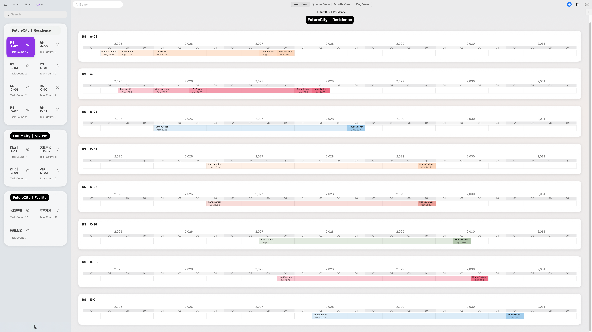

MooPlan：多项目里程碑管理，专为Mac而生
在Mac上优雅掌控多项目进度，关键节点一目了然


告别项目混乱，让多项目管理变得优雅高效
还在为多项目进度混乱而烦恼？里程碑分散在不同工具中？项目间关联不清晰？切换视图太麻烦？MooPlan 一站式解决。
多项目管理中枢
卡片式分组，视觉化掌控全局
像整理Finder文件般拖拽项目，色彩标记系统让多任务并行一目了然。里程碑雷达整合展示跨项目关键节点。
多维度视图系统
甘特图、看板、日历自由切换
多种视图模式智能联动，从甘特图到看板，从日历到列表，进度聚焦，切换自如，掌控全局轻而易举。
个性化体验
定制专属工作流
自定义主题色彩、项目排序规则，智能聚焦时段内里程碑，打造完全属于你的项目管理方式。
分组管理 + 多视图 + 个性化 = 三维一体项目管理平台
在 MooPlan，三者并非割裂功能，而是自然融合。在分组中管理的项目，可在多种视图间自由切换；个性化设置实时影响所有视图的展示效果。一处设置，全局生效，真正实现从管理到执行的完美闭环。

专为Mac而生，完美融入macOS生态
MooPlan 是专为 macOS 设计的原生应用。遵循Human Interface Guidelines，深浅色模式自动切换，Finder式拖拽逻辑，交互自然流畅。与系统通知、Spotlight搜索完美集成，让项目管理成为macOS体验的自然延伸。
听听他们怎么说
"MooPlan 的色彩标签让多项目管理变得一目了然！"
"终于能在Mac上优雅地管理多个项目了，拖拽操作太自然了！"
"多视图切换太方便了，从甘特图到看板无缝切换。"
准备好在Mac上重新定义多项目管理了吗？
立即免费下载 MooPlan，体验原生级多项目里程碑管理。